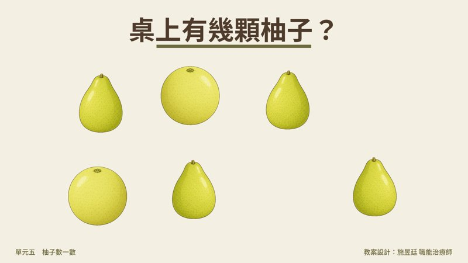
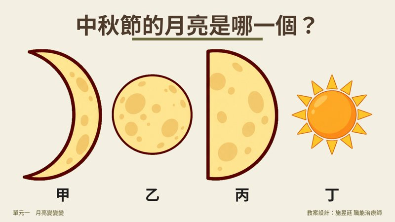
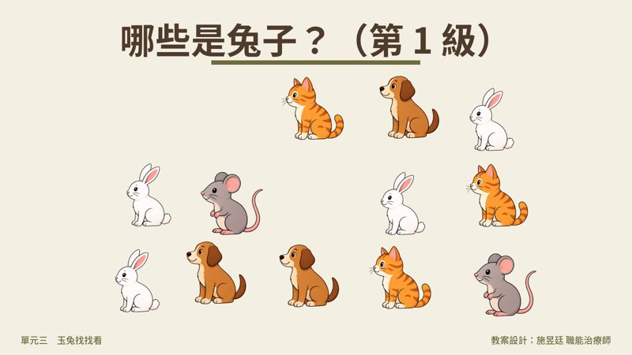
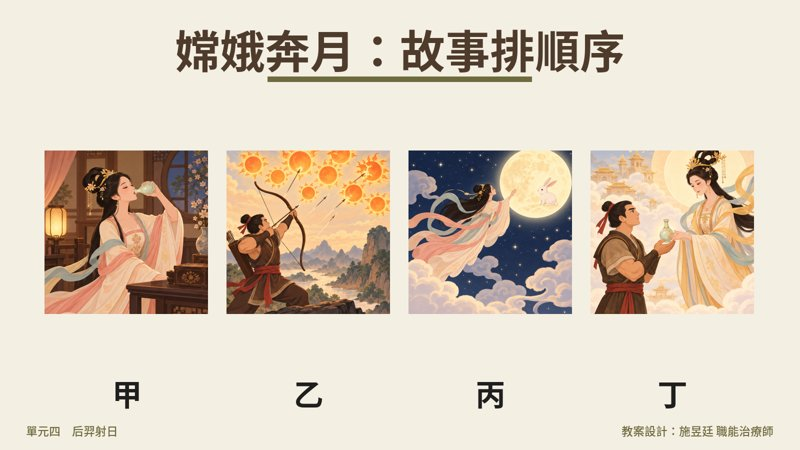

七個單元、37 頁投影片。柚子、月亮、月餅、玉兔、后羿、烤肉、懷舊——每一題「先猜再揭曉」，簡報筆翻一頁就有答案；每個單元最後留一題「聊聊看」，用中秋打開回憶。




帶領語與降階、升階做法都寫在 PowerPoint 每一頁的備註欄。
| 單元 | 練什麼 | 題目 |
|---|---|---|
| 暖身 | 自由聯想、口語表達 | 中秋節，你會想到什麼？ |
| 柚子數一數 | 計數、分類、步驟排序 | 桌上有幾顆柚子？剝開有幾瓣？哪一個不是柚子？剝柚子的步驟排排看 |
| 月亮變變變 | 視覺辨識、序列 | 中秋節的月亮是哪一個？月亮從最細排到最圓 |
| 月餅大不同 | 辨識、命名、簡單計算 | 哪一個是月餅？月餅家族你吃過哪一種？月餅切一切有幾塊？ |
| 玉兔找找看 | 視覺搜索、計數、找不同 | 三級難度：找兔子 → 數兔子 → 哪兩隻兔子不一樣 |
| 后羿射日 | 計數、減法、故事排序 | 天上有幾個太陽？射下 9 個剩幾個？嫦娥奔月四格排順序 |
| 中秋烤肉大會 | 分類、語意記憶 | 烤肉要準備什麼？這些食物是哪個節日吃的？ |
| 中秋節的味道 | 懷舊、口語表達 | 小時候的中秋節，你們家怎麼過？ |
訓練目標：視覺辨識、視覺搜索與選擇性注意力、一對一對應的計數與簡單加減、序列排序（月相、故事、生活步驟）、語意記憶（節日與食物的連結），以及最重要的——用中秋節打開懷舊對話。適合日照中心、社區據點、失智據點團體帶領，也可以一對一使用。